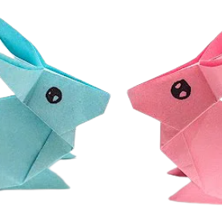
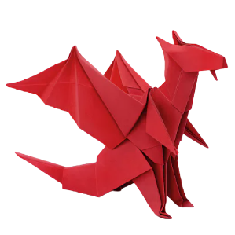
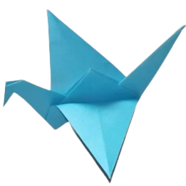

About Us
Follow Us
Origami Designs
Do you want to learn origami?
Here are some tutorials to make ORIGAMI crafts!

Rabbit Origami
- A baby rabbit is called a kit, a female is called a doe and a male is called a buck.
- Rabbits perform an athletic leap, known as a ‘binky‘, when they’re happy — performing twists and kicks in mid air!
- Like cats, happy rabbits purr when they’re content and relaxed.

Dragon Origami
- A dragon has a wide mouth with big and dangerous teeth, sometimes they have horns and hair.
- A dragon can perhaps breathe fire (or other dangerous substances).
- A dragon can look like a snake with wings, or like lizards

Swan Origami
- A male swan is called a cob, and a female swan is called a pen.
- A baby swan is called a cygnet and a group of swans is called a bevy or a wedge in flight.
- The swan's main predator is the human who hunts the swan for it's meat and it's feathers.